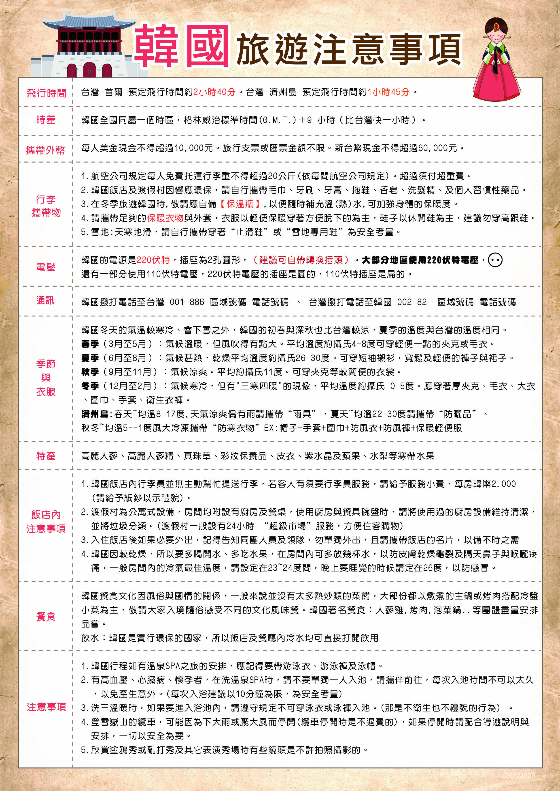

集合資訊
集合時間
3/25(星期三)
凌晨00:10
集合地點
桃園機場 第一航廈
真航空 3號櫃檯(台灣虎航代理)
識別牌
亮采旅遊領隊 林宗翰
0976-293-519
DAY 1 3/25
釜山
汗蒸幕
大邱漆谷村
太和江十里竹林
太和江國家庭園
蔚山樂天
TEL: 052-960-1000
DAY 2 3/26
大邱
蔚山無去川櫻花步道
E WORD星光櫻花節
(含門票+自由券+可愛動物農場+四季花園+星光纜車+83塔電梯券)
HOUND大邱大名店
TEL: 0507-1349-9701
海鮮辣湯麵或榨醬麵二選一+招牌糖醋肉
DAY 3 3/27
釜山
鎮海軍港節
長福山雕刻公園
余佐川
安民路
慶和火車站
註:賞櫻為季節性行程
釜山TRT
TEL: 051-819-8231
(五花肉+烤排骨+里肌肉)+大醬湯+韓式小菜無限量吃
DAY 4 3/28
釜山
韓流時尚彩粧店
積木村(甘川洞文化村)
天空膠囊列車(四人一台)
西面鬧區
釜山TRT
TEL: 051-819-8231
(長腳蟹吃到飽+蟹膏炒飯+蟹肉粥+握壽司)
DAY 5 3/29
釜山
大陵苑星巴克
韓服體驗3小時
慶州瞻星臺
慶州皇理團路
溫暖的家
祝您旅途愉快 Have a Nice Trip
服務費說明
本行程導遊領隊司機的服務費為，每位旅客每天 新台幣 300 元， 5 天共 新台幣 1,500 元， 請一律在韓國當地支付給領隊。
航班資訊
住宿資訊
-
Day 1
蔚山樂天
052-960-1000 -
Day 2
HOUND大邱大名店
0507-1349-9701 -
Day 3
釜山TRT
051-819-8231 -
Day 4
釜山TRT
051-819-8231 -
Day 5
溫暖的家
* 點擊飯店可顯示給司機看的卡片
時差
韓國與台灣時差一小時，韓國比台灣快一小時
（例如：台灣時間早上 9 點，韓國為早上 10 點）。
天氣穿著
三月底釜山早晚溫差較大，最低7度，最高22度。
請備妥保暖衣物，洋蔥式穿搭。
貨幣匯率
韓幣(KRW)1000元，約等於台幣22元。
建議在台灣先換好現金，韓國導遊不提供換錢服務，機場或鬧區有換錢所可以換匯。
行李與須知
嚴禁攜帶肉類入境。行動電源請隨身攜帶。
每人托運行李1件20公斤，手提行李一件10公斤。
泡麵可以帶回台灣嗎？
泡麵方面，基本上「沖泡即食」類型的泡麵、泡飯、速食米粉、速食粥等產品，均屬於免施檢疫範圍，旅客可以安心購買。
但如果是附有肉類零食的泡麵組合，例如火腿腸、鳳爪等等，就不能攜帶回來。
防檢署提醒，泡麵這類產品樣態種類多且不斷推陳出新，旅客如果有任何疑慮，可以直接到「動植物檢疫」櫃檯洽詢，由現場的檢疫人員確認檢查。即使經檢查發現產品無法攜帶入境，只要旅客主動申報並配合相關處理程序，就不會遭受處罰。
５種台灣禁止入境食物
防檢署明確指出幾類絕對禁止攜帶的產品：
１. 溏心蛋、溫泉蛋等未完全煮熟的蛋類製品
２. 各種生鮮水果，包含飛機餐提供的水果
３. 雞肉蛋白棒
４. 雞皮零食
５. 含有肉類的三明治、飯糰、麵包等產品
🔥防檢署Line官方帳號🔥https://lin.ee/53trW2m(點擊開啟)
只要在聊天室輸入『物品名稱』，系統就會告訴你檢疫規定！
注意事項





* 請詳閱以上注意事項
祝您旅途愉快 Have a Nice Trip
旅人檢查清單
重要文件
3C 產品
個人 / 盥洗 / 藥品
每日退房檢查 (防止遺落)
手指韓語
基礎會話
🛍️ 購物結帳
🍽️ 餐廳用餐
即時匯率換算
匯率參考: 1 KRW ≈ ... TWD
購物記帳 (總表)
總花費 (KRW)
₩0
約台幣 NT$ 0
祝您旅途愉快 Have a Nice Trip